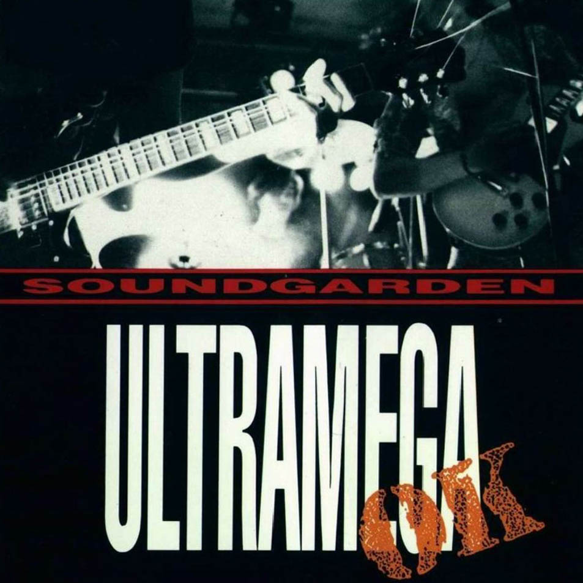
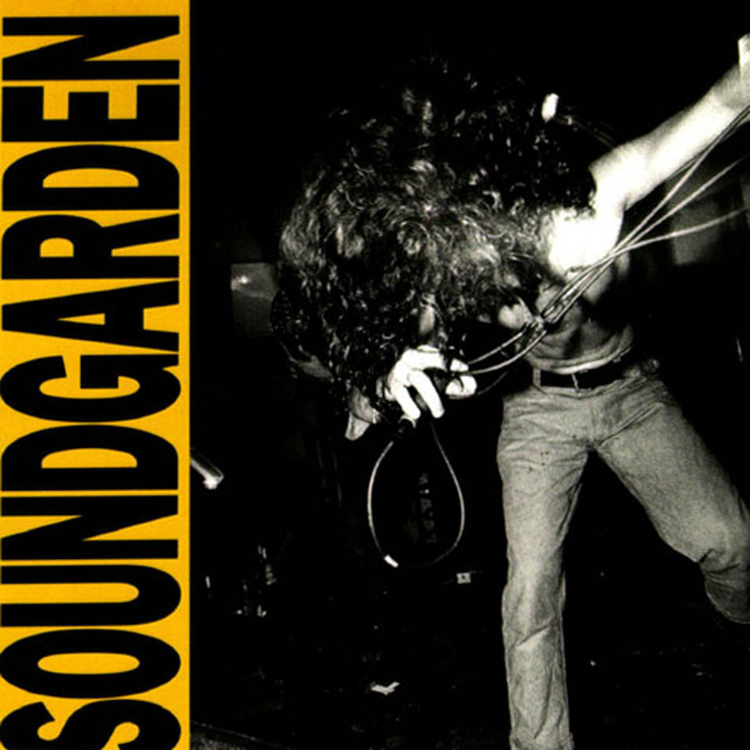
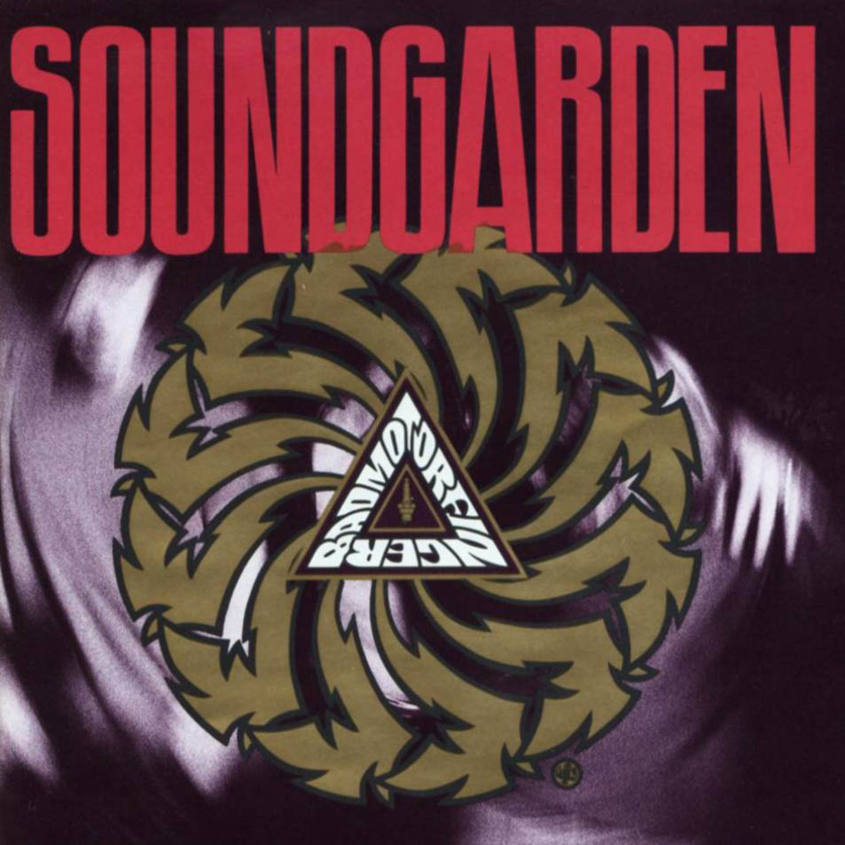
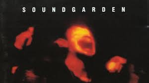

Headers examples

SOUNDGARDEN
En 1991 la nueva formación graba Badmotorfinger. Aunque se trató de un disco exitoso, fue relegado a un segundo plano debido a la repentina popularidad de Nevermind de Nirvana. Al mismo tiempo, la atención traída por Nevermind a las bandas del movimiento musical de Seattle, brindó a Soundgarden una mayor atención, haciendo que las canciones "Outshined" y "Rusty Cage", extraídas de Badmotorfinger, encontraran un hueco en emisoras de radio alternativas y en la propia MTV. Además, la polémica ocasionada por la negativa de MTV a emitir el vídeo de la canción "Jesus Christ Pose" por una posible controversia religiosa por las imágenes del mismo,4 dio a conocer más profundamente la música del grupo. La banda se fue de gira con Guns N' Roses como respaldo al álbum editado y más tarde realizaría el vídeo Motorvision, que sería filmado en la propia gira. Soundgarden también hizo acto de presencia en el Lollapalooza de 1992, tocando con Red Hot Chili Peppers, Pearl Jam y Ministry, entre otros. La banda se benefició a su vez del éxito del disco homónimo de Temple of the Dog, un proyecto iniciado por Cornell para homenajear la muerte de Andrew Wood, vocalista de Mother Love Bone y excompañero de piso de Cornell,4 de sobredosis de heroína.3 La banda apareció en la película Singles tocando "Birth Ritual", canción que aparecería en la banda sonora original de la película, además de una canción con Cornell como único intérprete, titulada "Seasons". En la película también figuró un fragmento de la versión demo de "Spoonman", canción que aparecería en Superunknown, en 1994. Superunknown marcó un punto de ruptura en la banda, conteniendo los sencillos "Black Hole Sun", "Spoonman", "The Day I Tried to Live" y "Fell on Black Days". Las canciones contenidas en Superunknown capturaban la creatividad de sus primeros trabajos, mientras que exhibía los aspectos más comerciales del grupo a usar elementos del rock psicodélico. En cuanto a las letras de las canciones, el álbum fue bastante oscuro y misterioso, ya que la mayoría trataban temas acerca del abuso de sustancias, el suicidio y la depresión. Muchas canciones tenían un toque indio o del medio oriente, como "Fell on Black Days" y "Half", en la que figura el bajista Ben Shepherd como vocalista en lugar de Cornell. Superunknown alcanzó el número uno en las listas de éxitos americanas en su primera semana y vendió más de tres millones de copias en los Estados Unidos,3 haciendo un total de seis millones en todo el mundo.4 Este disco le valió a Soundgarden dos premios Grammy, un premio MTV y un premio otorgado por la revista Rolling Stone.5
Ultimos dias y Post Ruptura
El último disco de Soundgarden fue producido por ellos mismos en 1996 y se llamó Down On the Upside. Fue notablemente menos heavy que los discos anteriores. El álbum engendró numerosos singles, entre los que se encuentran "Pretty Noose", "Blow Up the Outside World" y "Burden in my Hand". La banda explicó que querían diversificarse y explorar otros sonidos. Sin embargo, se dieron tensiones dentro del grupo durante las sesiones de grabación, ya que Cornell quería librarse de los característicos riffs de Kim Thayil, que se habían convertido en su seña de identidad en discos anteriores, lo cual molestó a Thayil. Como resultado, Chris Cornell terminó tocando muchos de los solos de guitarra que aparecerían en el mismo. Debido a fuertes críticas, el disco no alcanzó las ventas de su predecesor, aunque llegó al segundo puesto del Billboard y vendió más de un millón de copias.3 Las tensiones continuaron creciendo durante la gira realizada con motivo de este último disco. En la parada final de la gira, que tuvo lugar en Honolulu, Hawái, en febrero de 1997, Shepherd lanzó su bajo al aire ante la frustración provocada por los fallos constantes que sufría el equipo instrumental, que cayó al escenario estruendosamente. La banda se retiró y Cornell regresó para concluir el concierto con un solo de guitarra. El 9 de abril de 1997 la banda anunció su separación.4 El último lanzamiento de Soundgarden, un recopilatorio de grandes éxitos titulado A-Sides, certificó la ruptura final.
Discografía
| Año | Nombre del disco | Portada del disco |
|---|---|---|
| 1988 | Ultramega ok |  |
| 1989 | louder than love |  |
| 1991 | Badmotorfinger |  |
| 1994 | Superunknown |  |
| 1996 | Down the upside |